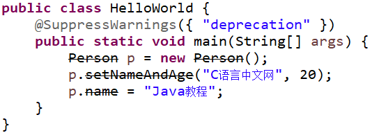

Java @SuppressWarnings：抑制编译器警告
Java 中的 @SuppressWarnings 注解指示被该注解修饰的程序元素（以及该程序元素中的所有子元素）取消显示指定的编译器警告，且会一直作用于该程序元素的所有子元素。例如，使用 @SuppressWarnings 修饰某个类取消显示某个编译器警告，同时又修饰该类里的某个方法取消显示另一个编译器警告，那么该方法将会同时取消显示这两个编译器警告。
@SuppressWarnings 注解主要用在取消一些编译器产生的警告对代码左侧行列的遮挡，有时候这样会挡住我们断点调试时打的断点。如下图所示。

如果你确认程序中的警告没有问题，可以不用理会。通常情况下，如果程序中使用没有泛型限制的集合将会引起编译器警告，为了避免这种编译器警告，可以使用 @SuppressWarnings 注解消除这些警告。
注解的使用有以下三种：
抑制警告的关键字如下表所示。
使用 @SuppressWarnings 注解示例代码如下：
上述代码第 2 行使用 @SuppressWarnings({ "deprecation" }) 注解了 main 方法。在《Java @Deprecated注解》一节中的 Person 代码中，这些 API 已经过时了，所以代码第 4 行~第 6 行是编译警告，但是在使用了 @SuppressWarnings 注解之后会发现程序代码的警告没有了。
@SuppressWarnings 注解主要用在取消一些编译器产生的警告对代码左侧行列的遮挡，有时候这样会挡住我们断点调试时打的断点。如下图所示。
如果你确认程序中的警告没有问题，可以不用理会。通常情况下，如果程序中使用没有泛型限制的集合将会引起编译器警告，为了避免这种编译器警告，可以使用 @SuppressWarnings 注解消除这些警告。
注解的使用有以下三种：
- 抑制单类型的警告：@SuppressWarnings("unchecked")
- 抑制多类型的警告：@SuppressWarnings("unchecked","rawtypes")
- 抑制所有类型的警告：@SuppressWarnings("unchecked")
抑制警告的关键字如下表所示。
| 关键字 | 用途 |
|---|---|
| all | 抑制所有警告 |
| boxing | 抑制装箱、拆箱操作时候的警告 |
| cast | 抑制映射相关的警告 |
| dep-ann | 抑制启用注释的警告 |
| deprecation | 抑制过期方法警告 |
| fallthrough | 抑制在 switch 中缺失 breaks 的警告 |
| finally | 抑制 finally 模块没有返回的警告 |
| hiding | 抑制相对于隐藏变量的局部变量的警告 |
| incomplete-switch | 忽略不完整的 switch 语句 |
| nls | 忽略非 nls 格式的字符 |
| null | 忽略对 null 的操作 |
| rawtypes | 使用 generics 时忽略没有指定相应的类型 |
| restriction | 抑制禁止使用劝阻或禁止引用的警告 |
| serial | 忽略在 serializable 类中没有声明 serialVersionUID 变量 |
| static-access | 抑制不正确的静态访问方式警告 |
| synthetic-access | 抑制子类没有按最优方法访问内部类的警告 |
| unchecked | 抑制没有进行类型检查操作的警告 |
| unqualified-field-access | 抑制没有权限访问的域的警告 |
| unused | 抑制没被使用过的代码的警告 |
使用 @SuppressWarnings 注解示例代码如下：
public class HelloWorld {
@SuppressWarnings({ "deprecation" })
public static void main(String[] args) {
Person p = new Person();
p.setNameAndAge("C语言中文网", 20);
p.name = "Java教程";
}
}
在 Eclipse 显示如下图所示。

上述代码第 2 行使用 @SuppressWarnings({ "deprecation" }) 注解了 main 方法。在《Java @Deprecated注解》一节中的 Person 代码中，这些 API 已经过时了，所以代码第 4 行~第 6 行是编译警告，但是在使用了 @SuppressWarnings 注解之后会发现程序代码的警告没有了。
关注公众号「站长严长生」，在手机上阅读所有教程，随时随地都能学习。内含一款搜索神器，免费下载全网书籍和视频。

微信扫码关注公众号